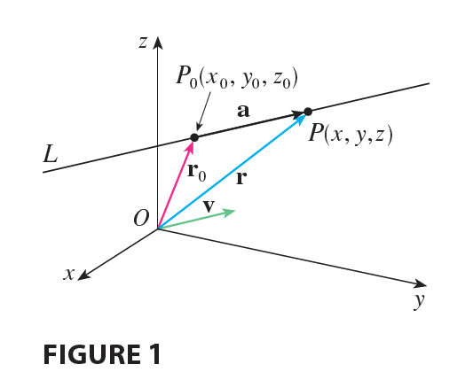
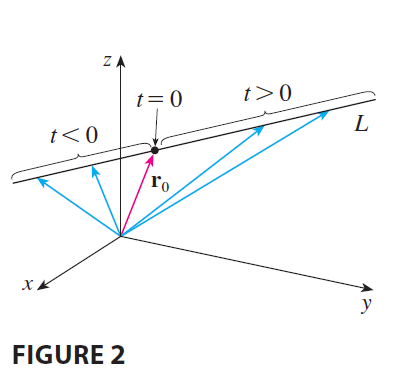

A line in the xy-plane is determined when a point on the line and the direction of the line (its slope or angle of inclination) are given. The equation of the line can then be written using the point-slope form.

Likewise, a line L in three-dimensional space is determined when we know a point \(P_0(x_0, y_0, z_0)\) on L and the direction of L. In three dimensions the direction of a line is conveniently described by a vector, so we let v be a vector parallel to L. Let \(P(x, y, z)\) be an arbitrary point on L and let \(\mathbf{r}_0\) and r be the position vectors of \(P_0\) and \(P\) (that is, they have representations \(\vec{OP_0}\) and \(\vec{OP}\)). If a is the vector with representation \(\vec{P_0P}\), as in Figure 1, then the Triangle Law for vector addition gives \(\mathbf{r} = \mathbf{r}_0 + \mathbf{a}\). But, since a and v are parallel vectors, there is a scalar \(t\) such that \(\mathbf{a} = t\mathbf{v}\). Thus \[ \mathbf{r} = \mathbf{r}_0 + t\mathbf{v} \tag{1} \] which is a vector equation of L. Each value of the parameter \(t\) gives the position vector r of a point on L. In other words, as \(t\) varies, the line is traced out by the tip of the vector r. As Figure 2 indicates, positive values of \(t\) correspond to points on L that lie on one side of \(P_0\), whereas negative values of \(t\) correspond to points that lie on the other side of \(P_0\).

If the vector v that gives the direction of the line L is written in component form as \(\mathbf{v} = \langle a, b, c \rangle\), then we have \(t\mathbf{v} = \langle ta, tb, tc \rangle\). We can also write \(\mathbf{r} = \langle x, y, z \rangle\) and \(\mathbf{r}_0 = \langle x_0, y_0, z_0 \rangle\), so the vector equation (1) becomes \[ \langle x, y, z \rangle = \langle x_0 + ta, y_0 + tb, z_0 + tc \rangle \] Two vectors are equal if and only if corresponding components are equal. Therefore we have the three scalar equations: \[ x = x_0 + at \quad y = y_0 + bt \quad z = z_0 + ct \] where \(t \in \mathbb{R}\). These equations are called parametric equations of the line L through the point \(P_0(x_0, y_0, z_0)\) and parallel to the vector \(\mathbf{v} = \langle a, b, c \rangle\). Each value of the parameter \(t\) gives a point \((x, y, z)\) on L.
Parametric equations for a line through the point \((x_0, y_0, z_0)\) and parallel to the direction vector \(\langle a, b, c \rangle\) are \[ x = x_0 + at \quad y = y_0 + bt \quad z = z_0 + ct \tag{2} \]
EXAMPLE 1 (a) Find a vector equation and parametric equations for the line that passes through the point \((5, 1, 3)\) and is parallel to the vector \(\mathbf{i} + 4\mathbf{j} - 2\mathbf{k}\). (b) Find two other points on the line.
The vector equation and parametric equations of a line are not unique. If we change the point or the parameter or choose a different parallel vector, then the equations change. For instance, if, instead of \((5, 1, 3)\), we choose the point \((6, 5, 1)\) in Example 1, then the parametric equations of the line become \[ x = 6 + t \quad y = 5 + 4t \quad z = 1 - 2t \] Or, if we stay with the point \((5, 1, 3)\) but choose the parallel vector \(2\mathbf{i} + 8\mathbf{j} - 4\mathbf{k}\), we arrive at the equations \[ x = 5 + 2t \quad y = 1 + 8t \quad z = 3 - 4t \] In general, if a vector \(\mathbf{v} = \langle a, b, c \rangle\) is used to describe the direction of a line L, then the numbers \(a, b,\) and \(c\) are called direction numbers of L. Since any vector parallel to v could also be used, we see that any three numbers proportional to \(a, b,\) and \(c\) could also be used as a set of direction numbers for L.
Another way of describing a line L is to eliminate the parameter \(t\) from Equations 2. If none of \(a, b,\) or \(c\) is 0, we can solve each of these equations for \(t\): \[ t = \frac{x - x_0}{a} \quad t = \frac{y - y_0}{b} \quad t = \frac{z - z_0}{c} \] Equating the results, we obtain \[ \frac{x - x_0}{a} = \frac{y - y_0}{b} = \frac{z - z_0}{c} \tag{3} \] These equations are called symmetric equations of L. Notice that the numbers \(a, b,\) and \(c\) that appear in the denominators of Equations 3 are direction numbers of L, that is, components of a vector parallel to L. If one of \(a, b,\) or \(c\) is 0, we can still eliminate \(t\). For instance, if \(a = 0\), we could write the equations of L as \[ x = x_0 \quad \frac{y - y_0}{b} = \frac{z - z_0}{c} \] This means that L lies in the vertical plane \(x = x_0\).
EXAMPLE 2 (a) Find parametric equations and symmetric equations of the line that passes through the points \(A(2, 4, -3)\) and \(B(3, -1, 1)\). (b) At what point does this line intersect the xy-plane?